5570T car radio and car telephone
- Path
- Descriptions > 55 ELECTRICAL EQUIPMENT > 5570 ACCESSORIES > 5570T car radio and car telephone
- Kind
- system description
- Applies to
- all engines; all production periods
- Interactive page
- https://sloeber94.github.io/elrnDB-fPnd/en/#/2750971
Applies to: all engines; all production periods
The system has been developed ad hoc for the vehicle: the acoustic properties of the passenger compartment have been carefully studied so that the amplifier and the speakers are perfectly suited to the vehicle: the sound is excellent throughout the passenger compartment.
The system is installed in the vehicle directly in production, without any operations afterwards: the cables are incorporated in the vehicle wiring.
It is therefore advisable not to modify the original system in any way (e.g. graphic equalizers, additional sub-woofers, extra amplifiers).
In addition, the system components (amplifier and speakers) should not be repaired individually, but can only be replaced with new components.
Three radio versions are available.
- Radio with tape player (Radio Tape),
- Radio with CD player (Radio CD),
- Radio withCD MP3 player (Radio CD MP3).
The panel for the Radio with CD and CD-MP3 is 1 DIN while the CD and CD-MP3 player panel is 2 DIN.
The CD and CD MP3 versions are prepared for connection with the low speed CAN interface at the B-CAN to allow dialogue with the other system nodes. The following are transferred through this interface:
- Anti-theft code.
- Ignition control (for key-off procedure).
- Volume control depending on the speed of the vehicle.
- Lighting control.
- Interface with external NQS display.
The following figure shows the full system.
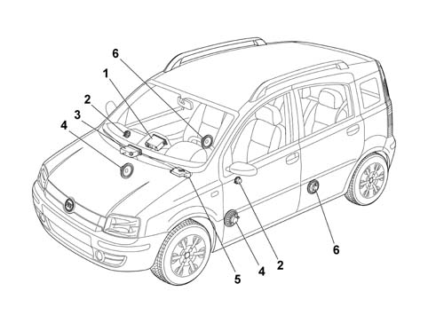
1 - Radio set 2 - Tweeter on front pillars 3 - CD Changer 4 - Speakers on front doors 5 - Subwoofer (under the passenger seat) 6 - Speakers on rear doors
Applies to: all engines; all production periods
General characteristics
The main technical specification of the radio are:
- Integral 8-character alphanumerical display with positive contrast.
- Preparation for connection to hands-free kit (outside telephone).
- Easy management menu for adjusting radio settings and possible outside interfaces (CD-Changer, telephone).
- Remote control from steering wheel.
- Possible interface with outside CD-Changer via ASCI-BUS line.
The main technical specification of the radio are:
- Operating voltage: from 10 to 16 V
- Nominal supply voltage: 13.5 V
- Minimum memory supply voltage: 5 V
- Operating voltage limit: 18 V for 1 hour; 24 V for 1 min
- Max. current absorption: 10A
- Stand by current: 2 mA
- Stand by current 10 secs after first connection: 30 mA
- Output channels: 4
- Audio power 4x40 watt
Applies to: all engines; all production periods
Radio specifications:
The general radio set specifications are as follows:
- Tuning type: quartz PLL
- Band limits: FM from 87.5 to 108 MHz, MW from 531. 0 to 1602.0 kHz, LW from 153.0 to 279.0 kHz
- Intermediate frequency: FM 10.6875 MHz, AM 10.6875 MHz
- Sensitivity and S/N ratio (26 dB): FM <15 dB microV, MW <32 dB microV, LW <38 dB microV
- Autostore sensitivity: Distant (DX) 25 dB microV ±8 dB, Local (LO) 40 dB microV ±8 dB
- FM channel separation: >26 dB
- RDS Functions (Radio Data System): AF (Alternative Frequency), PI (Program Identification), PS (Program Service), TP (Traffic Program), TA (Traffic Announcement), EON (Enhanced Other Networks), REG (RegionaI Program), PTY (Program Type: only on FM bands)
- RDS sensitivity: <28 dB microV
- Aerial signal nominal input impedance: 150 or
- Tuning search mode: Manual /Automatic: Up-Down
- Tuning to preset stations/Storing stations: N°30 (2x6 FM + 6 FT + 6 MW + 6 LW)
- 2 Scan modes (brief listening to a station and automatic moving on to the next one): Scan of frequency band used, Scan of stored stations.
- Distant/Loca I C DX/LO ): Si (Manual using one key)
- Autostore: 6 FT
Applies to: all engines; all production periods
Audio specifications
The main radio audio specificatios are:
- Bass
- Treble
- Balance
- Fader
- Loudness
- 5 equalisation curves (only radio CD and CD MP3): PRESET (factory equalisation settings), RocK, Jazz, Classical, USER (set by user)
- HI-FI system active control
- Audio Clip Detect:automatic limitation of volume if the amplifier detects output signal distortion
- Soft mute
Applies to: all engines; all production periods
- TAPE specifications:
The main tape playe specifications are as follows:
- tape player system: ACC (Analogie Compact Cassette)
- Mechanism type: FulI Iogic
- Number of tracks on tape: 4 (2x2 stereo)
- Tape speed: 4.76 cm/s
- Tape fast forward/rewind: FF/FR < 190 sec per tape (type C-60,90 min)
- Speed fluctuations: -2/+3 %
- Wow/Flutter: <0.35 %
- Signal/noise ratio: >47 dB
- Channel separation: >21 dB
- Noise reduction circuit: Dolby B
- Equalisation selection according to tape type: No
- Radio listening during tape fast forward/rewind: Yes (selectable)
- Electronic autoreverse
- Pinch roller release (PRR)
- Motorized loading and ejection
- Fast forward and reverse or arbitary number of tracks (AMS)
- Scan function
Applies to: all engines; all production periods
FRONT SECTION
The diagram below illustrates the location of the controls on the front section.
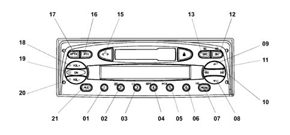
Applies to: all engines; all production periods
FRONT SECTION
The controls are described below.
N. | Function F1 | Function F2 | Tuner | Cassette | C.D. Charg. |
|---|---|---|---|---|---|
Press Button<1sec | Press Button>1sec | ||||
01 | Recall preset | Recall preset | 1 Preset recall 2 Preset memorizing | ||
02 | Recall preset | Recall preset | 1 Preset recall 2 Preset memorizing | Key 2 DolbyB on/off | |
03 | Recall preset | Recall preset | 1 Preset recall 2 Preset memorizing | Key 3 Pause on/off | |
04 | Recall preset | Recall preset | 1 Preset recall 2 Preset memorizing | Key 4 Repeat on/off | |
05 | Recall preset | Recall preset | 1 Preset recall 2 Preset memorizing | Key 5 Mix on/off | |
06 | Recall preset | Recall preset | 1 Preset recall 2 Preset memorizing | ||
07 | Access to menu | Scan preselection | 1 Access to menu 2 Preselection scan | Access menu | Access menu |
08 | Automatic backwards search | Automatic continuous backwards search | Automatic search | MSS backwards | Previous track selection |
09 | Automatic forward search | Automatic continuous forward search | Automatic search | MSS forward | Next track selection |
10 | 1 manual forwards search 2 Next PTY programme 3 fast forward 4 next CD selection | 1 manual forwards search 2 Next PTY programme 3 fast forward 4 next track selection | 1 manual forwards search 2 Next PTY programme | fast forward | Next CD selection |
11. | 1 manual backwards search 2 Previous PTY programme 3 fast rewind 4 previous CD selection | 1 manual backwards search 2 Previous PTY programme 3 fast rewind 4 start of track | 1 manual backwards search 2 Previous PTY programme | fast rewind | start of previous CD track selection |
12. | Radio band selection | Travelstore (FMT) | 1 Sel. bands FM1,FM2,FMT,MW,LW 2 Travelstore (FMT) | Travelstore (FMT) | Travelstore (FMT) |
13 | In order: Tuner, CC, CDC | Source scan | 1 In order: Tuner, CD, CDC 2 FM/AM scan | 1 In order: Tuner, CD, CDC 2 cassette scanning | 1 In order: Tuner, CD, CDC 2 CD scan |
14 | Cassette eject | Cassette eject | Cassette eject | Cassette eject | |
15 | Autoreverse | Autoreverse | |||
16 | PTY on /off | Display type of programme | 1 PTY on /off 2 Display type of programme | ||
17 | TA on /off | AF on/off | 1 TA on /off 2 TA on /off | 1 TA on /off 2 TA on /off | 1 TA on /off 2 TA on /off |
18 | Increases the volume by one step | Increases the volume rapidly | 1 Increases volume by one step 2 Increases volume quickly | 1 Increases volume by one step 2 Increases volume quickly | 1 Increases volume by one step 2 Increases volume quickly |
19 | Mute on /off | 1 Radio on 2 Radio off | |||
20 | Decreases the volume by one step | Decreases the volume rapidly | 1 Decreases the volume by one step 2 Decreases volume quickly | 1 Decreases the volume by one step 2 Decreases volume quickly | 1 Decreases the volume by one step 2 Decreases volume quickly |
21 | Selects: bass, treble, balance, fader | Loudness on/off | 1 Selects: bass, treble, balance, fader 2 Loudness on/off | 1 Selects: bass, treble, balance, fader 2 Loudness on/off | 1 Select : bass,treble,balance,fader 2 Loudness on/off |
Applies to: all engines; all production periods
RADIO AND TAPE PLAYER PIN OUT
The diagram below shows the rear view of the radio and the location of the connectors.
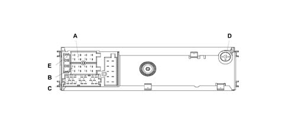
Applies to: all engines; all production periods
RADIO AND TAPE PLAYER PIN OUT
CONNECTOR A
Pin | Signal |
|---|---|
A1 | CAN BUS (B),Signal I/U, Max. voltage 13.5V ,Max. current 10mA |
A2 | N.C. |
A3 | CAN BUS (A), Signal I/U, Max. voltage 13.5V, Max. current 10mA |
A4 | IGNITION (+30) Signal I , Max. voltage 13V, Max. current 10A Polarity reversal protection |
A5 | N.C. |
A6 | NC |
A7 | N.C. (provision + key) |
A8 | EARTH , Signal I, Max. voltage 0V, Max. current 10A Polarity reversal protection |
CONNECTOR B
Pin | Signal |
|---|---|
B1 | RR+ (Right rear speaker +), Signal U, Max. voltage 11V,Max. current 4.5A ,C.C. /Temperature protection |
B2 | RR- (Right rear speaker -), Signal U, Max. voltage 11V,Max. current 4.5A ,C.C./Temperature protection |
B3 | RF+(Right front speaker +), Signal U, Max. voltage 11V,Max. current 4.5A ,C.C./Temperature protection |
B4 | RF- (Right front speaker -), Signal U, max. voltage 11V,Max. current 4.5A ,C.C./Temperature protection |
B5 | LF+ (Left front speaker +), Signal U, Max. voltage 11V,Max. current 4.5A ,C.C./Temperature protection |
B6 | LF- (Left front speaker -), Signal U, voltage 11V, Max. current 4.5A ,C.C./Temperature protection |
B7 | LR+ (Left rear speaker +), Signal U, voltage 11V, Max. current 4.5A , C.C./Temperature protection |
B8 | LR- (Left rear speaker -), Signal U, voltage 11V, Max. current 4.5A , C.C./Temperature protection |
CONNECTOR C
Pin | Signal |
|---|---|
C1 | NC |
C2 | NC |
C3 | NC |
C4 | NC |
C5 | NC |
C6 | 12V switchable to booster U, Voltage 13 V, Max. current 400mA |
C7 | Telephone NF in + Signal I, Voltage 11V, Max. current 2mA |
C8 | Telephone NF in - , Signal I, Voltage 11V, Max. current 2mA |
C9 | Telephone mute, Signal I, Voltage 13.5 V, Max. current 2mA |
C10 | Signal A remote control, Signal I/U, Voltage 5 V, Max. current 20mA |
C11 | Signal B remote control, Signal I/U, Voltage 5 V, Max. current 20mA |
C12 | Earth signal, Signal I/U, Voltage 0 V, Max. current 40mA |
C13 | ASCI-BUS in (for cdc) Signal U, Voltage 5V, Max. current 11mA |
C14 | ASCI-BUS out (for cdc) Signal I, Voltage 5V, Max. current 11mA |
C15 | 12V permanent (for cdc), Signal U, Voltage 13.5V, Max. current 10A |
C16 | 12V switchable (for cdc), Signal U, Voltage 13 V, Max. current 400mA |
C17 | ASCI –BUS Earth, Signal I/U, Voltage 0V, Max. current 10A |
C18 | NF-Earth input (for cdc), Signal I, Voltage 0V, Max. current 2mA |
C19 | Input L (for cdc), Signal I, Voltage 2V, Max. current 1mA |
C20 | Input R (for cdc), Signal I, Voltage 2V, Max. current 1mA |
CONNECTOR D
Aerial
CONNECTOR E
10 A fuse
Applies to: all engines; all production periods
LABELS
There are 3 labels on the cover of the radio:
- Label with FIAT product number (65x19 mm)
- 36 pin connector pin out details (50x54 mm)
- Dolby Label
Every radio is supplied with:
- Radio passport with the serial number and code
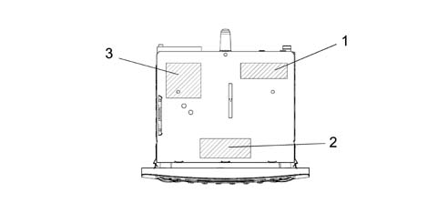
1 - Dolby Label 2 - FIAT product number label 3 - Connections label
Applies to: all engines; all production periods
General characteristics
The main technical specifications of a radio with CD player and MP3 player are:
- Music audio power: 4 x 40W
- 7 band graphic equaliser (only CD and CD MP3)
- Large alphanumeric display (20 characters for RDS functions+control flags) with negative contrast for radio CD and CD MP3.
- Preparation for connection to hands-free kit (outside telephone).
- Easy management menu for adjusting radio settings and possible outside interfaces (CD-Changer, telephone).
- Remote control from steering wheel.
- Possible interface with outside CD-Changer via ASCI-BUS line.
The main technical specification of the radio are:
- Operating voltage: from 10 to 16 V
- Nominal supply voltage: 13.5 V
- Minimum memory supply voltage: 5 V
- Operating voltage limit: 18 V for 1 hour; 24 V for 1 min
- Max. current absorption: 10A
- Stand by current: 2 mA
- Stand by current 10 secs after first connection: 30 mA
- Output channes: 4
- Audio power 4x40 watt
Applies to: all engines; all production periods
Radio specifications:
The main specifications of the radio set are:
- Tuning type: PLL, quartz
- Band limits: FM from 87.5 to 108 MHz, MW from 531. 0 to 1602.0 kHz, LW from 153.0 to 279.0 kHz
- Intermediate frequency: FM 10.6875 MHz, AM 10.6875 MHz
- Sensitivity and S/N ratio (26 dB): FM <15 dB microV, MW <32 dB microV, LW <38 dB microV
- Autostore Sensitivity: Distant (DX) 25 dB microV ±8 dB, Local (LO) 40 dB microV ±8 dB
- FM channel separation: >26 dB
- Functions: RDS (Radio Data System): AF (Alternative Frequency), PI (Program Identification), PS (Program Service), TP (Traffic Program), TA (Traffic Announcement), EON (Enhanced Other Networks), REG (RegionaI Program), PTY (Program Type: only on FM bands)
- RDS sensitivity: <28 dB microV
- Aerial signal nominal input impedance: 150 or
- Tuning search mode: Manual /Automatic: Up-Down
- Preset station tuning/station storageN°30 (2x6 FM + 6 FT + 6 MW + 6 LW)
- 2 Scan modes (brief listening to a station and automatic moving on to the next one): scan of frequency bands used, Scan of stored stations.
- Distant/Loca I C DX/LO ) selection: Yes (ManuaI using a key )
- Autostore: 6 FT
Applies to: all engines; all production periods
Audio specifications:
The main radio specifications are:
- Bass
- Treble
- Balance
- Fader
- Loudness
- 5 equalisation curves (only radio CD e CD MP3): PRESET (factory settings), RocK, Jazz, Classical, USER set by user)
- HI-FI system active control
- Audio Clip Detect:automatic limitation of volume if the amplifier detects output signal distortion
- Soft mute
Applies to: all engines; all production periods
Specifications of CD player and CD with MP3 player
The main specifications of the CD player are:
- Motorized loading and ejection
- Pause
- FF / REW
- Skip Track.
- Track Scan function
- Mix function
- Track Repeat
- TPM function (Track Program Memory)
- CD naming (30 positions, including CDC)
The main specifications of the CD playe with MP3 player are:
- Track Skip
- Folder Skip
- Random: Folder, Disc
- Scan
- Random: Track, Folder, Disc
- MP3 DISPLAY: display can be set to ID3TAG information: file name, Track title, File, time elapsed
Both types offer:
- signal/noise ratio:>80 dB
- channel separation: 1kHz >= 70 dB, 10kHz >= 50 dB
Applies to: all engines; all production periods
FRONT SECTION
The diagram below illustrates the location of the controls on the front section.
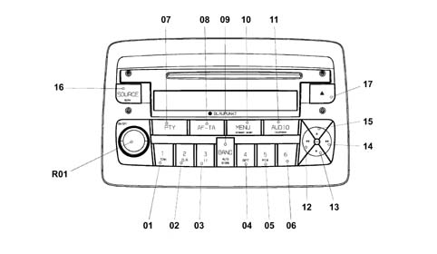
Applies to: all engines; all production periods
FRONT SECTION
The controls are described below.
N. | Function F1 | Function F2 | Tuner | CD player | C.D. Charg. |
|---|---|---|---|---|---|
Press key<1sec | Press key>1sec | ||||
01 | 1 Preset recall | 1 Preset memorizing | 1 Preset recall | Key1 :1TPM on/off 2 Store TPM | |
02 | 2 TPM on/off | 2 TPM memorizing/reset | 2 Preset memorizing | Key 2 reset TPM | |
03 | 3 Pause on/off | 3 Pause on/off | Key3 :Pausa on/off | Key3 :Pausa on/off | |
04 | 4 Repeat on/off | 4 Repeat on/off | Key4: Repeat on/off | Key4: Repeat on/off | |
05 | 5 Mix on/off | 5 Mix on/off | Key5: Mix on/off | Key5: Mix on/off | |
06 | 6 MP3 player info | 6 MP3 player info (only with MP3 player) | |||
07 | PTY on /off | Display type of programme | 1 PTY on /off 2 Display type of programme | 1 PTY on /off 2 Display type of programme | 1 PTY on /off 2 Display type of programme |
08 | TA on /off | AF on/off | 1 TA on /off 2 TA on /off | 1 TA on /off 2 TA on /off | 1 TA on /off 2 TA on /off |
09 | Radio band selection | Autostore (FMT) | 1 Sel. bands FM1,FM2,FMT,MW,LW 2 Autostore (FMT) | 1 Not present 2 Autostore (FMT) | 1 Not present 2 Autostore (FMT) |
10 | Access to menu | Scan preselection | 1 Access to menu 2 Preselection scan | Access menu | Access menu |
11. | Select : bass,treble,balance,fader | Loudness on/off | 1 Selects: bass, treble, balance, fader 2 Loudness on/off | 1 Selects: bass, treble, balance, fader 2 Loudness on/off | 1 Selects: bass, treble, balance, fader 2 Loudness on/off |
12. | 1 manual backwards search 2 programme selection .PTY,TP, AF previous start track/select previous track | 1 fast manual backward search 2 select previous .PTY,TP, AF programme 3 start track/previous track fast selection | 1 manual backwards search 2 programme selection previous PTY,TP, AF precedente | 1 Start of track/fast selection of previous track 2 Fast selection of previous track | 1 Start of track/fast selection of previous track 2 Fast selection of previous track |
13 | 1 Automatic backward search 2 Select CD backwards 3 Select previous folder (only with MP3 player) | 1 Continuous automatic backward search 2 Continuous backward CD selection 3 Previous folder selection (only with MP3 player) | 1 Automatic backward search 2 Automatic continous backward search | 2 Select previous folder (only with MP3 player) 2 Continuous previous folder selection (only with MP3 player) | 1 Select previous CD 2 Continuous previous CD selection |
14 | 1 manual forwards search 2 programme selection, next PTY,TP, AF successivo 3 start of track/ select next track | 1 manual forwards search 2 select programme, next PTY,TP, AF 3 start of track, select next track | 1 manual forwards search 2 select next .PTY,TP, AF programme | 1 select next track 2 Next track fast selection | 1 Next track selection 2 Next track fast selection |
15 | 1 Automatic forward search 2 Forward CD selection 2 Select next folder (only with MP3 player) | 1 Automatic continuous forward search 2 Automatic forward CD selection 3 Continuous next folder selection (only with MP3 player) | 1 Automatic forward search 2 Automatic continuous forward search | 1 Next folder selection (only with MP3 player) 2 Fast next folder selection (only with MP3 player) | 1 Next CD selection 2 Continuous next CD selection |
16 | In sequence: Tuner, CD, CDC | Source scan | 1 In order: Tuner, CD, CDC 2 FM/AM scan | 1 In order: Tuner, CD, CDC 2 CD scan | In sequence: Tuner, CC, CDC 2 CD scan |
17 | CD eject | CD eject | CD eject | CD eject | CD eject |
R01 | 1 Increase/Decrease volume step by step Mute ON/OFF | 1 Fast volume increase/decrease 2 Radio ON/OFF | 1 Increase/decrease volume step by step 2 Fast volume increase/decrease | 1 Increase/decrease volume step by step 2 Fast volume increase/decrease | 1 Increase/decrease volume step by step 2 Fast volume increase/decrease |
Applies to: all engines; all production periods
PINOUT FOR RADIO WITH CD AND MP3 PLAYER
The diagram below shows the rear view of the radio and the location of the connectors.
Applies to: all engines; all production periods
PINOUT FOR RADIO WITH CD AND MP3 PLAYER
CONNECTOR A
Pin | Signal |
|---|---|
A1 | CAN BUS (B),Signal I/U, Max. voltage 13.5V ,Max. current 10mA |
A2 | N.C. |
A3 | CAN BUS (A), Signal I/U, Max. voltage 13.5V, Max. current 10mA |
A4 | IGNITION (+30) Signal I , Max. voltage 13V, Max. current 10A Polarity reversal protection |
A5 | N.C. |
A6 | NC |
A7 | N.C. (provision + key) |
A8 | EARTH , Signal I, Max. voltage 0V, Max. current 10A Polarity reversal protection |
CONNECTOR B
Pin | Signal |
|---|---|
B1 | RR+ (Right rear speaker +), Signal U, Max. voltage 11V,Max. current 4.5A ,C.C. /Temperature protection |
B2 | RR- (Right rear speaker -), Signal U, Max. voltage 11V,Max. current 4.5A ,C.C./Temperature protection |
B3 | RF+(Right front speaker +), Signal U, Max. voltage 11V,Max. current 4.5A ,C.C./Temperature protection |
B4 | RF- (Right front speaker -), Signal U, max. voltage 11V,Max. current 4.5A ,C.C./Temperature protection |
B5 | LF+ (Left front speaker +), Signal U, Max. voltage 11V,Max. current 4.5A ,C.C./Temperature protection |
B6 | LF- (Left front speaker -), Signal U, voltage 11V, Max. current 4.5A ,C.C./Temperature protection |
B7 | LR+ (Left rear speaker +), Signal U, voltage 11V, Max. current 4.5A , C.C./Temperature protection |
B8 | LR- (Left rear speaker -), Signal U, voltage 11V, Max. current 4.5A , C.C./Temperature protection |
CONNECTOR C
Pin | Signal |
|---|---|
C1 | NC |
C2 | NC |
C3 | NC |
C4 | NC |
C5 | NC |
C6 | 12V switchable to booster U, , Voltage 13V, Max current400mA |
C7 | Telephone NF in + Signal I, Voltage 11V, Max. current 2mA |
C8 | Telephone NF in - , Signal I, Voltage 11V, Max. current 2mA |
C9 | Telephone mute, Signal I, Voltage 13.5 V, Max. current 2mA |
C10 | Signal A remote control, Signal I/U, Voltage 5 V, Max. current 20mA |
C11 | Signal B remote control, Signal I/U, Voltage 5 V, Max. current 20mA |
C12 | Earth signal, Signal I/U, Voltage 0 V, Max. current 40mA |
C13 | ASCI-BUS in (for cdc) Signal U, Voltage 5V, Max. current 11mA |
C14 | ASCI-BUS out (for cdc) Signal I, Voltage 5V, Max. current 11mA |
C15 | 12V permanent (for cdc), Signal U, Voltage 13.5V, Max. current 10A |
C16 | 12V switchable (for cdc), Signal U, Voltage 13 V, Max. current 400mA |
C17 | ASCI –BUS Earth, Signal I/U, Voltage 0V, Max. current 10A |
C18 | NF-Earth input (for cdc), Signal I, Voltage 0V, Max. current 2mA |
C19 | Input L (for cdc), Signal I, Voltage 2V, Max. current 1mA |
C20 | Input R (for cdc), Signal I, Voltage 2V, Max. current 1mA |
CONNECTOR D
Aerial
CONNECTOR E
10 A fuse
Applies to: all engines; all production periods
LABELS
There are 3 labels on the cover of the radio:
- Sticker with FIAT product number (65 x 19 mm)
- 36 pin connector pin out details (50x54 mm)
- Laser Label
Every radio is supplied with:
- Radio passport with the serial number and code
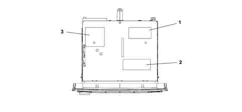
1- Laser Label 2 - FIAT product number label 3 - Connections label
Applies to: all engines; all production periods
Management of steering wheel controls
Some radio functions can be managed by keys on the steering wheel
The following figur shows controls on the steering wheel
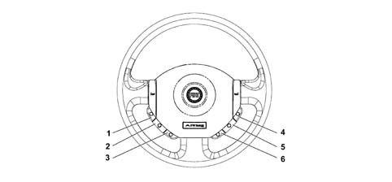
1 - Mute 2 - Volume up 3 - Volume down 4 - Source 5 - Scan + 6 - Scan -
Applies to: all engines; all production periods
Management of steering wheel controls
The Mute key pauses CD playing and disables audio output playing
The Volume Up/Volume Down keys increase/decrease listening volume
The Source key selects the source: Radio, CD, Audio/MP3
The last two kays have different functions according to which source is active
With the Radio source active, press the Scan+ or Scan key to select one of the stored stations:
- Scan + key (cyclic selection of preset forward stations):1,2,3,4,5,6,1,.....
- Scan - key (cyclic selection of preset backward stations):6,5,4,3,2,1,6.....
With CD Audio/MP3 source active, thei Scan + or Scan - change track in increasing or decreasing order::
Applies to: all engines; all production periods
Blaupunkt 5 disc CD-Changer specifications:
The CD changer is fitted in the passenger side glove compartment
The general specifications of the Blaupunkt 5-disc CD changer are as follows:
- Motorized loading and ejection
- CD selection
- Pause
- FF / REW
- Skip Track.
- Track Scan function
- Mix function
- Track Repeat
- TPM function (only combined with CD radio)
- CD Naming: 10 positions including CDC (only combined with CD radio)
The main electrical specifications of the CD Changer are as follows:
- Max. current absorption: 2A
- Stand by current: 3 mA
- Frequency response: min -1 dB, 1 kHz 0 dB tip. -0.5 dB, 17 Hz - 20 kHz max + 1 dB,
- Channel separation 1 kHz (filtro p.b. 22 kHz): min. 70dB, tip. 85 dB
- Output level (load 10k): min. 1.8 V, type 2 V, max 2.2 V
- Output impedence: min. 0.8 K, tip. 1 K , max 1.2 K.
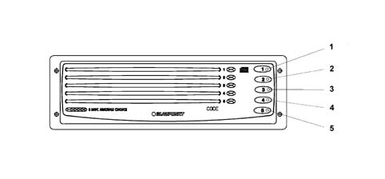
Applies to: all engines; all production periods
Blaupunkt 5 disc CD-Changer specifications:
The controls are described below.
N. | Function F1 | Function F2 |
|---|---|---|
Press Button<1sec | Press key>1sec | |
relay | Select and play disc 1 | Eject disc 1 |
relay | Select and play disc 2 | Eject disc 2 |
3 | Select and play disc 3 | Eject disc 3 |
4 | Select and play disc 4 | Eject disc 4 |
5 | Select and play disc 5 | Eject disc 5 |
Applies to: all engines; all production periods
CD CHANGER PINOUT
The following illustration shows the CD Changer.
Pin | Signal |
|---|---|
C13 | CDC BUS RXD, I/U signal, +5V/0v |
C14 | CDC BUS TXD, I/U Signal, Voltage +5V/0v |
C15 | 14V Permanent CDC, U Signal, Voltage 14V, Max current 2A |
C16 | 14V Switched CDC, Signal U, Voltage 0V |
C17 | CDC BUS GND, I/U Signal, Voltage 0V |
C18 | Reference audio CDC, I/U Signal, Voltage 0V |
C19 | CDC audio L I/U signal, 2Veff/0dB |
C20 | CDC audio R, Signal I/U, 2Veff/0dB |
Applies to: all engines; all production periods
LABELS
The CD Changer cover bears 2 stickers:
- Sticker with FIAT profile number
- Laser Label
Each CD Changer is supplied with:
- CD Changer passport with serial and code number
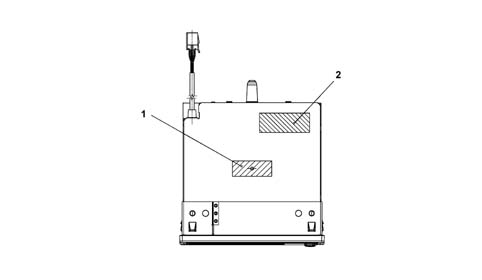
1 - Laser Label 2 - FIAT product number label
Applies to: all engines; all production periods
Outside CD Changer management
The CD Changer source (Audio) is selectable on the radio from among the various audio sources by pressing the Source key.
The following controls can be operated from the steering wheel keys:
- Scan + key: CD UP track scan
- Scan - key: CD DOWN track scan
Applies to: all engines; all production periods
Preparation for cellular telephone
When the customer has a radio phone provision option and handsfree kit installed by the aftersales service network, the radio is able to play the phone call through the car speakers. This function is active even with the radio off with key on (Automatic Radio Wake Up function).
Applies to: all engines; all production periods
Specifications
Its electrical specifiations are:
- 71/19000 Hz passing band
- 105±22Hz resonance frequency
- nominal impedance 4 Ohm
- RSM power 20 W
- MAX power 40 W
- sensitivity 1W/1mt 88.66±2 dB
Applies to: all engines; all production periods
Components
Location
- The front woofers are fitted in the lower part of the doors
Type
- The woofer speaker is designed to enhance the bass and it is made from a treated paper membrane, a treated cloth centering device, a treated paper dust cover and an aluminium/paper moving coil support.
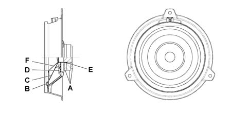
A - Magnet assembly (Ferrite + Fe) B - Suspensoin: Polyurethane C - Membrane: treated card D - Locator: treated cloth E - Mobile coil mount: aluminium/paper F - Cone: treated card
Applies to: all engines; all production periods
SPECIFICATIONS
This is a high fidelity woofer speaker with a special bass box incorporated which diffuses the sound in an optimum manner preventing vibrations and interference.
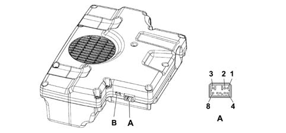
A - Electrical connector B - 10A fuse
Applies to: all engines; all production periods
SPECIFICATIONS
Connettore P092A pinout
Conn. | Pin | Operation |
|---|---|---|
P092A | relay | + left audio input |
P092A | relay | + right audio input |
P092A | 3 | +13.5 Vdc power source |
P092A | 4 | - left audio input |
P092A | 5 | - right audio input |
P092A | 6 | N.C. |
P092A | 7 | Earth |
P092A | 8 | Ignition enablement (Key-on) |
Applies to: all engines; all production periods
Components
The speaker specifications are as follows:
- Magnet assembly: Ferrite + Fe
- Suspension: polyurethane
- Membrane: treated paper
- Locator: treated clotth
- Mobile coil mount: aluminium/card
Applies to: all engines; all production periods
Location
It is located beneath the passenger seat
Applies to: all engines; all production periods
RECOMMENDATIONS FOR FITTING SPEAKERS
In order not to damage the speakers, some precautions should be taken when they are fitted and moved.
In particular, do not do the following:
- Stack up the speakes on top of one another when they are removed from their packing
- Place the speakers near metal parts In the case of very small parts, these could get into the gap and produce noises
- Twist the terminals once the electrical connector is inserted
- Rest on the speaker membrane during the fitting stages
- Perforate the speaker membrane with a screwdriver during the fitting stages
- Touch the cone (warning: it is one of the most delicate parts)
- Never let the speaker come into contact with solvents
The following, on the other hand, should be done:
- Always handle the speaker using the plastic structure without touching the membrane and other moving parts
- Discard speakers which been subject to impacts and visually inspect that there are no distortions
- Remove any protection before fitting them on the vehicle.